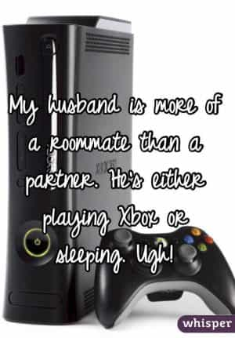

Jared is a middle-aged guy full of old-man wisdom. He's best described as a gentlemen scholar and a man among men. You can read his writing at his site: Legends of Men


As much as some of us would like to think women are solely to blame for the degradation of the family unit, they are not. Men are to blame too. More specifically, white knights, soy boys, and blue pill men. But the faults that make them bad husbands or fathers all stem from everything that falls under the umbrella term of cultural decline. In other words, the same forces that make men bad husbands are those that make society a cesspool; perversion of the family unit, digital addictions, post-industrial convenience, policies infected by feminism, and an anything-goes culture.
Here are four ways that our culture molds men to be bad husbands.
Women are in the labor market like never before. I’ll spare you the statistics and just ask you this, have you worked in any job that wasn’t a trade but was void of women? Where? Which department? They’re as much or more of the labor market now than men, yet women are really only attracted to men who earn more than them.
Not only do they make their own money and dedicate far too much time to their jobs, but if a man doesn’t do the same to keep his income above hers, he will lose her attraction. This creates an unhealthy work and personal life imbalance that forces men to make money they might not care about just to keep the marriage together.
Tired and stressed, men are bound to make poor husbands, giving up their precious time to compete in a rat race.
Because women are also working with other men away from their husbands, jealous feelings will likely arise. Cosmo magazine and empowered women tell all women to use their sexuality to get ahead. How are husbands supposed to behave thinking that their wives are showing their cleavage to get a raise?

Neither men nor women view their family as a single unit. Instead, husbands and wives live like bachelors and bachelorettes, respectively. They see each other in the morning, go to work, see each other at night, order take-out, and fight over who’s going to clean the bathroom. What can they do for each other when traditional sex roles have been replaced with individual ambitions?
This goes both ways but when women wonder why their husbands aren’t good husbands, it’s because men have too few reasons to think their wives are good wives.
Men today have to game and entertain their wives to keep them interested lest they tap into their penis pipeline from work or a Tinder account to fill any void of excitement. Everyone knows a woman can get sex far easier than a man if a relationship ends. To try and prevent that, men run game on their own wives, but this is an unsustainable lifestyle.
When you have a household to run and kids to raise, running game isn’t a priority. Women take this to mean that a man doesn’t try anymore. In truth, if the wife stayed home and took care of all the menial chores that must be done to keep a house and raise children, he should be more than willing to woo her.
Wooing a wife specifically entails buying her gifts, taking her out to a nice meal, maybe going dancing, things along those lines. Romantic stuff. But all that is meaningless to shopaholic women (and working women love to spend) who go out to lunch every day and go out dancing with their girlfriends from work on Friday nights.
Men can’t woo their wives anymore because women steal the novelty of it. But neither can they game their wives for an extended period. They’re destined to give up, leading women to say, “He stopped trying when we got married.”

Thanks to all the women and immigrants in the labor market, men have to compete for jobs more than ever. The women in HR departments or in the cubicle next door are dangers to men at work. One wrong look and that woman in the cubicle next to yours complains to the woman in HR that you were undressing her with your eyes. Next thing you know you’re fired and released to an increasingly competitive job market.
Immigrants more than ever take the jobs teenagers used to do. The men in their 20s now are years behind men of prior generations because they couldn’t even find a warehouse or fast-food job to let them save up some money and get them into the workforce young. So a 27-year-old man today is years behind 27-year-olds of prior generations in terms of career development.
Wives today still expect as much from their husbands as wives of 50 years ago, plus they expect to be gamed, plus their husbands have to be more attractive than any man they may meet at their jobs, and men have to earn more than their wives, all that despite the fact that men today are years behind the men of 50 years ago.
The consequences are dire for men. They know that women have a full penis pipeline and that losing their jobs may just as well mean losing their wives and divorce rape. Kids don’t secure the bond much, just look out how many empowered single mothers are out there. Love is often a weak bond to women who have drunk the feminist kool-aid (even if they claim to be traditional). At any temporary setback, a man could worry that his wife will leave just because she has so many options.
The anxiety of these potential problems often causes marital problems. Anxiety affects men for the worse, reducing T levels, making them possessive, and making their bodies and minds unhealthy, resulting in a downward spiral. Before you know it, fears of divorce leads to a self-fulfilling prophecy.
None of these are excuses. On the contrary, men have to rise to the occasion of being great husbands more than ever. This is especially true if a man has sons because he has to show those sons the way of men. And when he rises to be a great husband he may just lead his wife to be a great wife.
For more from Jared Trueheart on the roles of men and women in literature and film check out his writing at Legends of Men.
Read More: Women Sexualize Themselves For The Public As Much As For Their Husbands